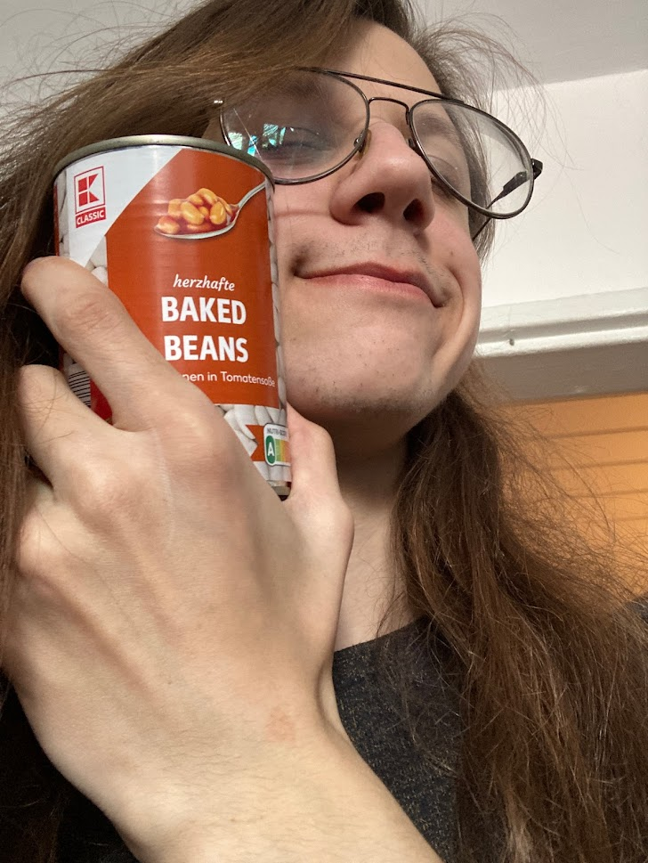

aka a bragathon written while feeling on one particular side of the "I am the best - Everyone hates me" spectrum

Click here for a PowerPoint presentation
Hi! I'm Bartek, 22 and the internet mostly knows me as PokerFacowaty.
I work as a Content Reviewer at A Generic Corporation with Bad Management™.
I studied Swedish Language and Culture at Jagiellonian University for 2 years before eventually dropping out (partly because of remote learning, partly because of my laziness and cheating related to it) and have currently no plans to study anything, but probably will pick something up at some point. I'm just not a person who can memorize a phone book because someone told me to - sorry not sorry - and would need to really be into a subject in order to study it, especially when working full time. On the bright side, the two years were not completely lost, I still remember some Svenska and would like to get back to feeling comfortable speaking it again.
My biggest passion is definitely speedrunning (finishing games as fast as possible) and organising charity speedrunning events. I am a CEO of a Foundation - GSPS - and over 5 years we've raised over 140k PLN during a number of events that gathered community members from the entire country and beyond. GSPS is definitely a project that has a special place in my heart. Other than that, I also help organize other events, such as ESA in Sweden.
My other interests involve old technology such as my VHS cam (I occasionally vlog with it), casettes, vinyl, old games and consoles.
Recently I'm into getting a bit more tech-savy, which mostly comes down to learning basic Python and learning to feel more comfortable with Linux. Pretty much every step I make is very rewarding and I get very excited when a program does what I want it to do, even if sometimes my 17-years-of-IT-experience-I-wrote-assembly-in-kindergarten friends don't fully understand it. Front-end is not yet my strong side (as you can see, lol), but I'm fairly happy with this site.
In terms of personality I am an introvert, but it might not be very obvious when I'm around people I feel comfortable with. My introvert side is more manifested when I need a day spent in my room without talking to anyone after a week-long event or feeling happy just staying home and doing nothing.
personality, music, looking for something serious, preference, the wire, date ideas, bad jokes, sexuality,